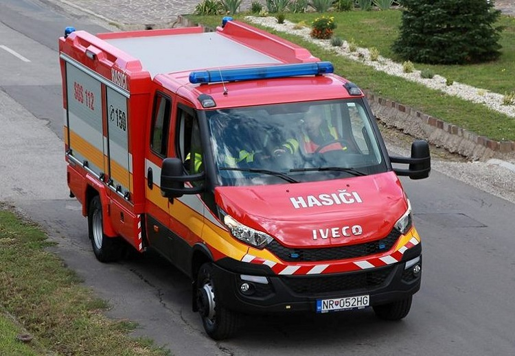
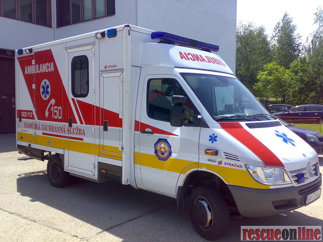
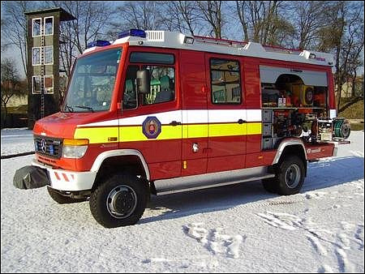
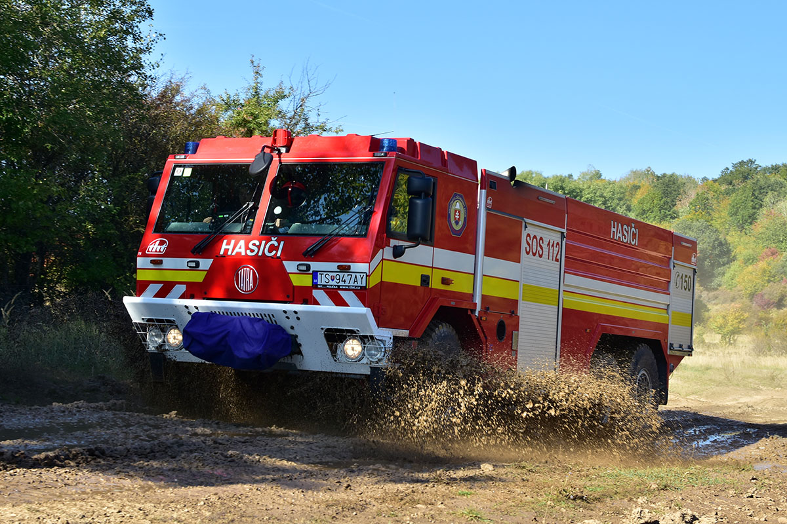

Iveco Daily CAS 15
Iveco Daily CAS 15 je cisternová automobilová striekačka s výkonom čerpadla 1500 l/min. Vozidlo primárne slúži dobrovoľným hasičským zborom obcí/miest na rýchlu prepravu zasahujúcich hasičov (1+5) a materiálu potrebného na prvotný zásah. Iveco disponuje 700 litrovou nádržou na vodu.
Mercedes-Benz Sprinter
Mercedes-Benz Sprinter využíva HaZZ po celom Slovensku. Slúži na prvotné ošetrenie zranených osôb na mieste zásahu. Posádku tvoria plnohodnotní hasiči, ktorí pomáhajú pri zásahu. Avšak pri zraneneniach zasahujúcich hasičov ich posádka ošetruje.
Mercedes-Benz Vario
Mercedes-Benz Vario je automobil, ktorý využíva HaZZ pri prvotnom zásahu. Automobil je nasadzovaný pri všetkých druhoch zásahu, najmä však pri dopravných nehodách. Disponuje 1000 litrovou nádržou na vodu a sadou hydraulického vyslobodzovacieho náradia.
Tatra T815 8x8 VVN

Nákladný automobil Tatra 815 VVN sa môže využívať pri hromadných nešťastaich. Slúži na evakuáciu osôb z ťažko prístupných miest, prepravu materiálu a humanitárnej pomoci, možnosť pripojiť snežný pluh alebo vysokovýkonný naviják.
Tatra T815-7 CAS30
Hasičské vozidlo CAS 30 T815-7 6×6 je určené na prepravu hasičského družstva 1+3 a hasebných prostriedkov pre požiarny zásah vodou alebo penou pri použití nízkeho alebo vysokého tlaku vody. Automobil disponuje 9000 l nádržou na vodu a 530 l nádržou na penidlo.